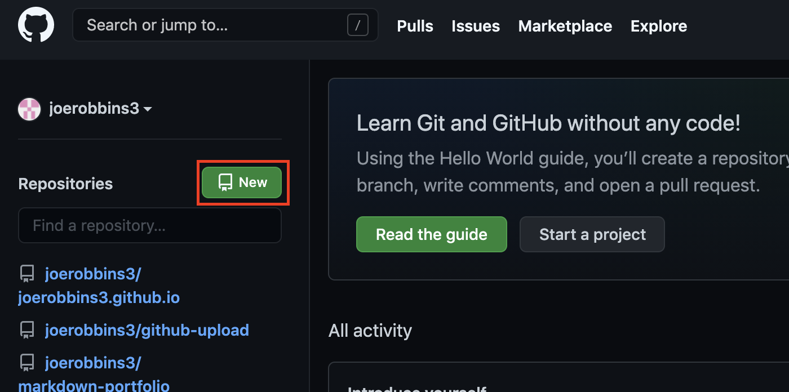
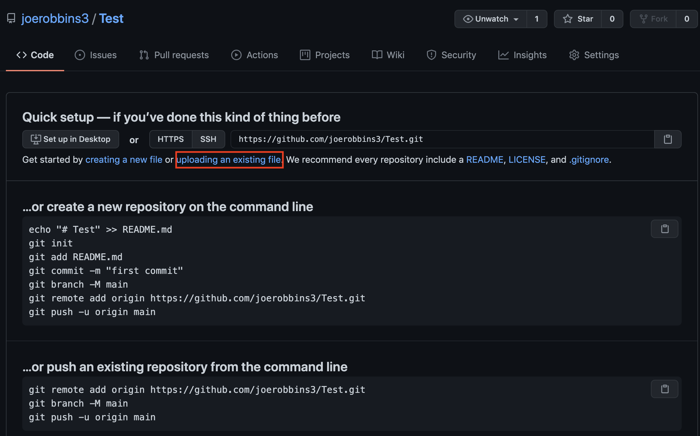
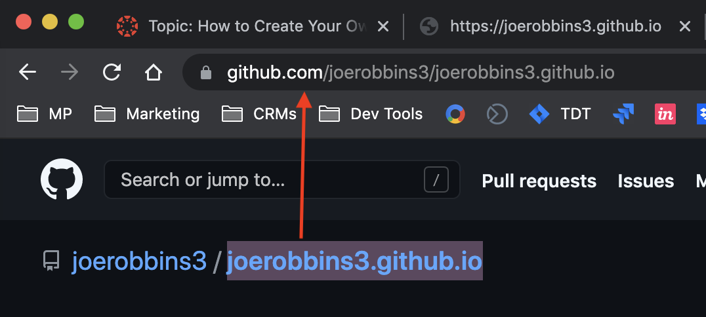

You will need to begin by taking a picture of your face and saving it to your computer.
That way employers can see how you are! You will also need to create an html file that
will provide the structure of your portfolio and anything you want to show off.
Save this to your computer as well.

If you don't already have a git hub account, please make one by going to github.com, and selecting "Sign Up".
Create a new repository, and name it [your username].github.io Example: billybob.github.io
Select "upload an existing file" and then choose the HTML and jpg files you created in Step 1.
Copy your repository name into your browser and voila! See your brand new portfolio in all of its splendor.
